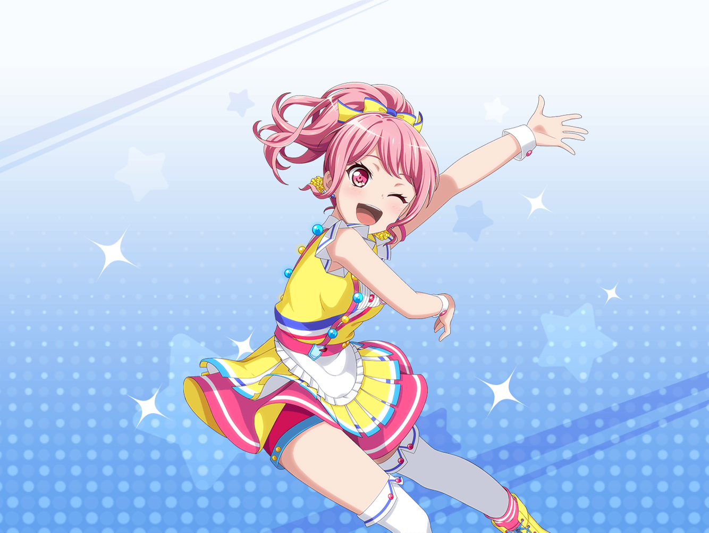

ファーストフード店
彩
先にテイクアウト２つご案内お願い！
花音ちゃん、タイミングみてレジ交代してあげてくれるかな？
どんどん休憩回さないといけないから
花音
ふえぇ……う、うん。わかった……！
彩
ありがとう！
あ、それからそっちの二人は先にゴミ捨てお願い！
私はその間に、テーブル片付けてきちゃうから
彩
戻ったら私も厨房に入るね！
大変だけど、みんなでなんとか乗り切ろう！
バイト一同
おー！
彩
はあ〜……みんなお疲れさま。
私がバイトリーダーだなんて、どうなることかと思ったけど
みんなのおかげで乗りきれたよ〜
彩
あともうちょっとで閉店だし、お客さんもそろそろ……あれ？
日菜
やっほー、彩ちゃん！
思ったより遅くなっちゃった。もう閉店？
彩
日菜ちゃん！ うん、そろそろ閉店だよ
日菜
そっか〜。ビシっと指示出す彩ちゃん、見たかったんだけどなー。
どう？ みんなのアドバイス通りにやれた？
花音
アドバイス……？
彩
ひ、日菜ちゃん！ それは……！
日菜
えー、別に隠すことないじゃん♪
実は昨日、彩ちゃんからパスパレのみんなに連絡がきてさー
日菜
『明日、店長が出張になっちゃった！ どうしよ〜！
店長の代わりに指示出しなんてムリだよ〜！』ってね。
遅くまでパスパレのみんなでアドバイスしてあげたんだ
花音
そうだったんだ
彩
日菜ちゃん！ 絶対言わないって約束したのに
日菜
あれ？ そうだっけ？ まあいーじゃんいーじゃんっ
彩
うう……
彩
実はね、日菜ちゃんの言う通りなんだ。
昨日みんなに相談して……それをもとに、メモを作っておいたの。
今日はそれを見ながら指示を出してたんだ
彩
だから、今日を乗り切れたのは私の力じゃなくて、
パスパレ……それから、みんなのおかげなんだ。
本当にありがとうっ！
彩
私、すぐテンパるし、頼りないと思うけど
これからも一緒に頑張ってくれると嬉しいですっ
花音
彩ちゃん……うんっ。これからも力を合わせて
一緒に頑張っていこうね！
スタッフ１
丸山さーん！
すみません、ちょっといいですかー？
彩
あ、はーい！ 今いきまーす！
ごめん、ちょっと行ってくるね！
日菜
……実はさー、あたし達がしたアドバイスって
すっごくあいまいなアドバイスだけなんだよね
花音
あいまいなアドバイス？
日菜
そう。『声を掛けられたらまず深呼吸』とか、
『時間がかかってもいいから、状況をしっかり確認する』とかさ
日菜
実際どんな指示を出すかは彩ちゃんが判断したわけだし、
今日を乗り切れたのは彩ちゃんの力でもあるってわけ
花音
そうなんだ……！ うん、そうだよね。
今日の彩ちゃん、すごく頑張ってたもん
日菜
なのに彩ちゃん、
ぜーんぜん気づいてないんだもんなー
花音
日菜ちゃん……
花音
（本人には言ってあげないんだねって、
言ったらダメ、かな……？）